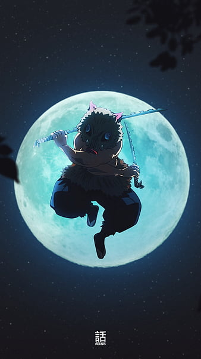
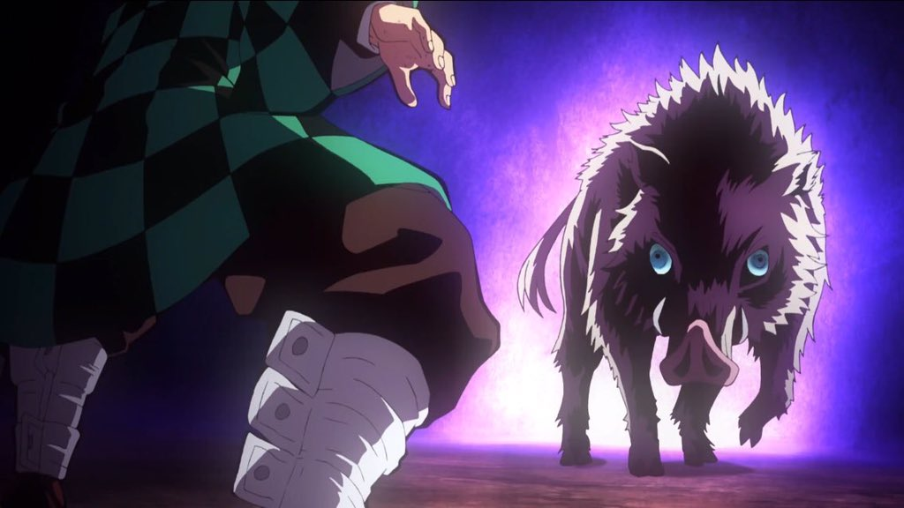
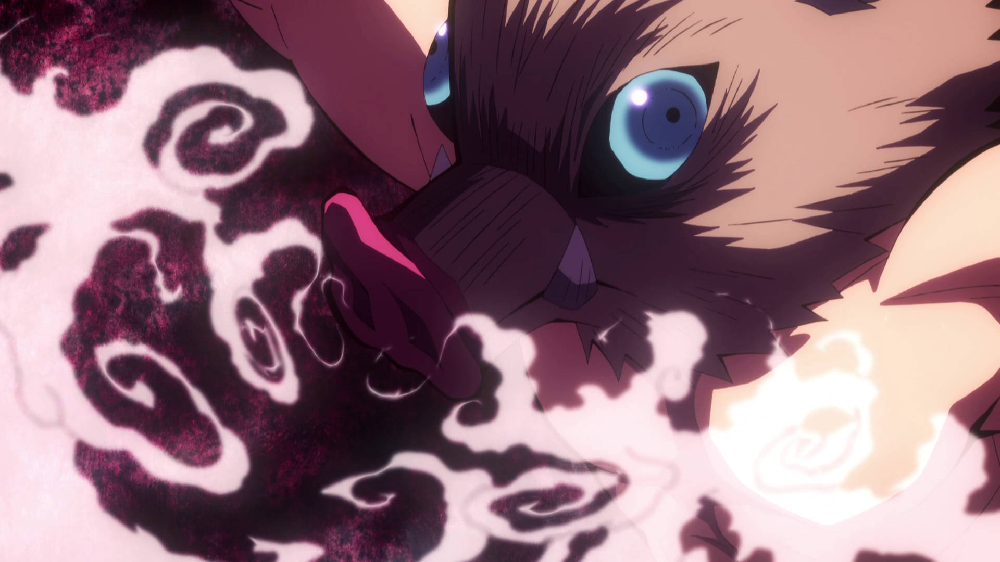
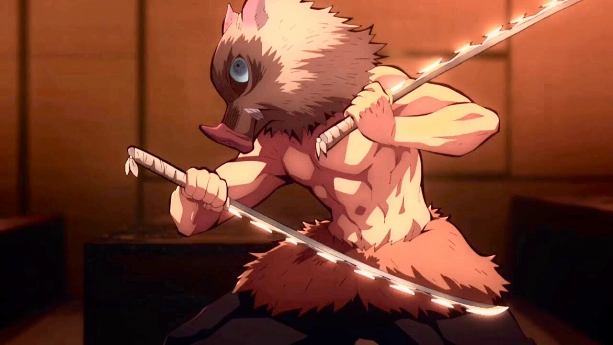
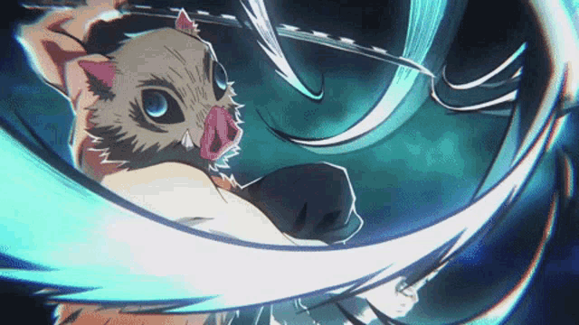

Respiracion de la Bestia
¿Cual es la respiracion de la bestia?
Origenes
La respiración de la bestia, su creacion se basa principalmente en el concepto de imitar y aprovechar la
fuerza y habilidades de los
animales.Inosuke Hashibira fundador de dicha respiracion dio lugar a este estilo de combate, tomando como
fuente principal las habilidades de los animales salvajes (puesto que el vivio toda su infancia entre las
montañas rodeado de estos) tales como el jabalí, el mono, el insecto,
entre otros, habilidades las cuales incorporo en su estilo de respiración.
Al inhalar y exhalar de manera específica, puede mejorar sus habilidades físicas y obtener una ventaja
en la batalla.

Tecnicas
Cada técnica de la respiración de la bestia tiene un nombre específico y se basa en un animal en particular.
Por ejemplo, su técnica de "carga del jabalí" le permite moverse rápidamente como un jabalí y atacar con
fuerza y precisión.
La técnica del "salto del mono" le permite saltar grandes distancias y
atacar a sus enemigos desde arriba, mientras que la técnica del "golpe del insecto"
le permite golpear a sus enemigos con una velocidad y fuerza increíbles.

Carateristicas
Además de mejorar sus habilidades físicas, la respiración de la bestia también le permite aumentar su
resistencia
y recuperación. Al respirar de manera adecuada, Inosuke puede mantener un alto nivel de energía
ademas de resistir los ataques de sus enemigos durante períodos prolongados.
la respiración de la bestia también ayuda a acelerar su recuperación después de haber sufrido lesiones.

Conclusion
En conclusión, la respiración de la bestia de Inosuke es una técnica de respiración única que le da una
fuerza
y velocidad increíbles en la batalla. Al imitar las habilidades de los animales
respirando de manera adecuada, puede mejorar sus habilidades físicas, aumentar su resistencia,
recuperación, dando como resultado una ventaja notoria en la batalla.

Posturas
- Primer colmillo: Perforar y extraer (Ichi no kiba: Ugachi nuki) Apuñala el cuello del objetivo con
ambas hojas.
- Segundo colmillo: Desgarrar y romper (Ni no kiba: Kirisaki) Una barra en forma de doble X con sus dos
hojas en ambas diagonales.
- Tercer colmillo: Desgarrar y devorar (San no kiba: Kuizaki) Cortes horizontales simultáneos hacia la
garganta del objetivo.
- Cuarto colmillo: Picada en trozos(Shi no kiba: Kiri koma zaki) Varias barras diagonales dobles con
ambas espadas.
- Quinto colmillo: Locura de cortes (Go no kiba: Kurui zaki) Es una técnica que corta todo en todas
direcciones.
- Sexto colmillo: Mordisco desgastante (Roku no kiba: Ran gui gami) Una decapitación simultánea con sus
dos espadas desde ambas direcciones.
- Séptimo colmillo: Percepción espacial (Shichi no kiba: Kūkan Chikaku) Puede identificar la posición de
los enemigos sintiendo pequeñas perturbaciones en el aire. Por lo general, hunde sus dos espadas
Nichirin en el suelo para utilizar esta técnica.
- Octavo colmillo: Embestida de cerdo (Hachi no kiba: Bakuretsu Mōshin) Inosuke hace una carrera loca
hacia su oponente, sin siquiera prestar atención a defenderse en el camino.
- Noveno colmillo: Corte ondulante divino (Ku no kiba: Shin uwari saki) El joven Hashibira se disloca las
articulaciones de su brazo para aumentar el alcance de su ataque.
- Décimo colmillo: Colmillos rotatorios (Jū no kiba: Enten senga) Hace girar sus espadas en un movimiento
circular. Usó este ataque para hacer volar las Nubes Congeladas de Doma.
- Nueva idea (postura no oficial idea que el chico improvisó para salvar su vida.): Corte volador
(Omoitsuki no nagesaki) Una técnica improvisada en la que el chico jabalí lanza sus dos espadas a un
enemigo.
He aqui un video con las posturas animadas hasta la fecha Beast Breathing
¿Te gustaria concer mas acerca de otras respiraciones? dejanos saber cuales en el siguiente
cuadro de texto.
¡Mantente al tanto de nuestro contenido!, ingresa tu correo electronico y
recibiras notificaciones sobre los diversos temas de tu comunidad geek.